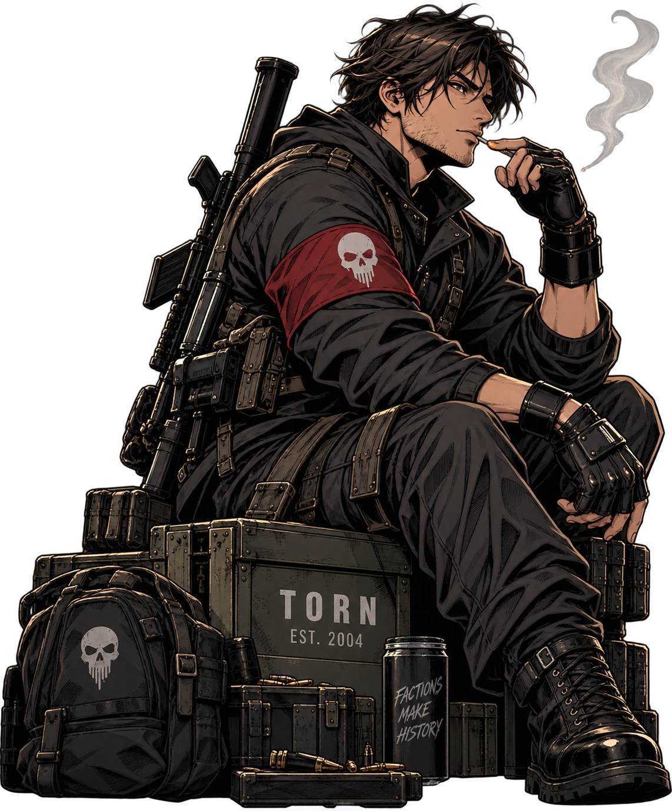

Torn's default UI hides half the game. These are the tools serious players run — what each one does and how to set it up. All read-only, all using your own API key.

"Nobody complains about preparation after the fight starts. Get these installed while it's quiet — you'll understand why when it isn't."
Userscripts (like FFScouter) run inside a script manager extension. Install one first:
Each tool needs a Torn API key. Make a separate key per tool with the minimum access it needs (Limited or Custom), at torn.com → Settings → API Key.
The big one — a browser extension that overlays quality-of-life everywhere in Torn: market values, travel, chain timer, OC, faction and inventory helpers.
Shows an estimated Fair Fight / target strength on profiles and attack lists — so you pick fights you win and chain efficiently.
Enemy spies (estimated stats), chain & war tools, faction roster and stat tracking. A staple for war prep.
Torn-endorsed helper site: chain & target lists, travel / foreign-stock, awards tracking and faction tools.
The best way to play Torn on a phone — loads Torn with userscript support and API-powered shortcuts. iOS & Android.
YATA, TornStats and Torn PDA are third-party but Torn-endorsed. TornTools and FF Scouter are community userscripts/extensions. Exact install screens change — follow each tool's own guide if a step looks different.
"Your API key is access. Treat it like the keys to the armory — hand out the least you can, and know who's holding a copy."